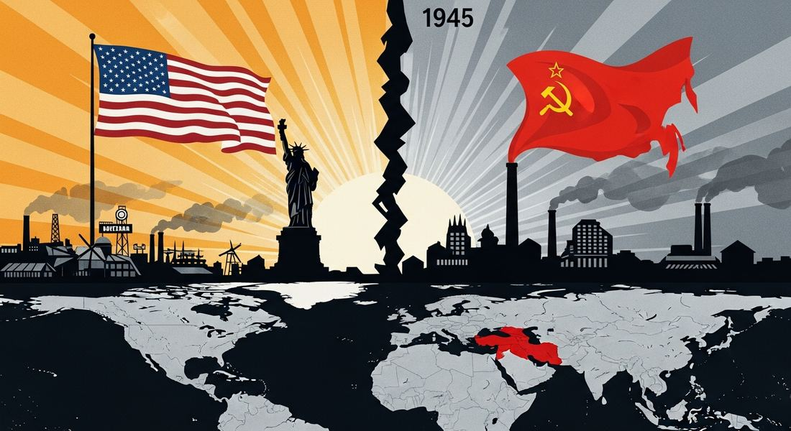
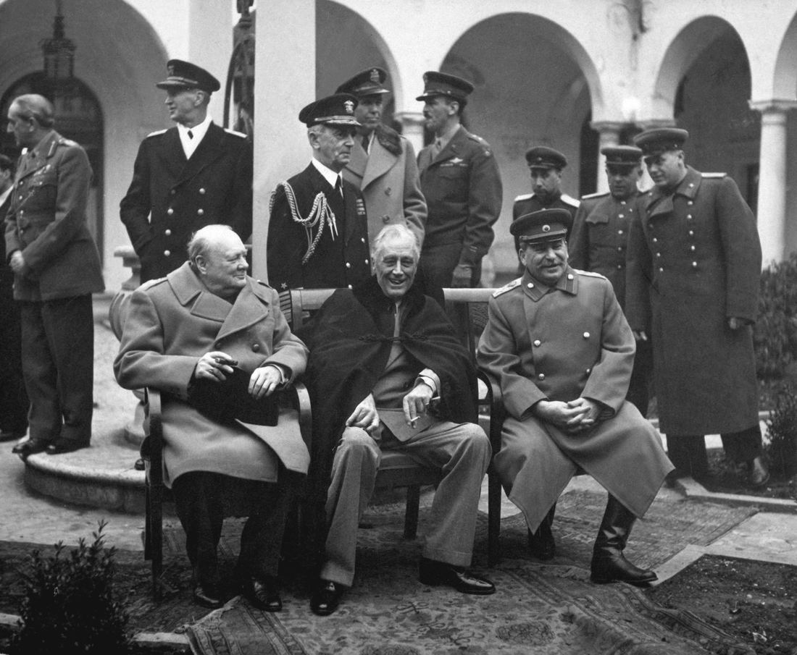

8.1 Setting the Stage for the Cold War and Decolonization
- LO-A: WWII reshuffled global power: The US and USSR emerged from WWII as superpowers while the old European empires (Britain, France, the Netherlands) were economically exhausted. This power shift created the conditions for both the Cold War and decolonization simultaneously. WWII raised anti-imperial expectations: The Atlantic Charter (1941) pledged self-determination for all peoples. Colonial soldiers fought for their empires and returned home expecting change. The defeat of Japan (an Asian power) by Western technology weakened the myth of European invincibility. Two competing superpowers, two competing ideologies: The US promoted liberal democracy and capitalism; the USSR promoted communist authoritarianism. Both claimed to oppose colonialism, but for strategic reasons, not principled ones. Their rivalry defined world politics for 45 years. The stage was set for everything: Topic 8.1 is context-building. The economic and technological gains of the WWII victors (KC-6.2.IV.C.i) and the unfulfilled promises after WWI vs. the new reality after WWII (KC-6.2.II) set the stage for every development in Unit 8.
Try each question before revealing the answer.
1. Why did WWII, rather than WWI, finally trigger the collapse of European empires?
2. How did "technological and economic gains" during WWII shift global power?
3. The CED says hopes for self-government were "largely unfulfilled" after WWI. What happened that was different after WWII?
4. Why is Topic 8.1 labeled "Setting the Stage" rather than being a substantive topic on its own?
- Explain the historical context of the Cold War after 1945, including how WWII shifted global power and why anti-imperialist sentiment accelerated the dissolution of empires
Tap a term for its definition.
-
Definition: A state with extraordinary global military and economic power, able to project force anywhere in the world. Significance: After WWII, only the US and USSR qualified, dwarfing traditional European great powers.
-
Definition: A joint declaration by FDR and Churchill stating war aims including self-determination for all peoples. Significance: Raised colonial peoples' expectations that independence would follow the war, expectations that were not fully honored by the European powers.
-
Definition: The process by which colonial peoples gained independence from imperial powers, primarily after WWII. Significance: One of the defining global transformations of the 20th century, over 50 new nations formed between 1945 and 1975.
-
Definition: The ideological and geopolitical rivalry between the US (capitalism/democracy) and USSR (communism) from 1945 to 1991, characterized by proxy wars and nuclear standoff rather than direct military conflict. Significance: The dominant framework of world politics for nearly half a century.
-
Definition: Opposition to the practice of one country controlling and exploiting another. Significance: WWII dramatically intensified anti-imperialist sentiment, both because colonial people had served in the war and expected freedom, and because both superpowers rhetorically supported independence.
-
Definition: The principle that peoples have the right to choose their own government and political status. Significance: First broadly proclaimed after WWI (Wilson's Fourteen Points) but applied mainly to Europe; after WWII it became the basis for decolonization worldwide.
🌍 A World Transformed: The Aftermath of WWII
When World War II ended in 1945, the world looked nothing like it had in 1939. The war had been the most destructive in human history, an estimated 70–85 million people died, including soldiers, civilians, and Holocaust victims. The economies of Europe and Asia lay in ruins. The map of global power had been completely redrawn.
Two nations stood apart from the wreckage: the United States and the Soviet Union. They had been allies in defeating Nazi Germany and Imperial Japan. But they had fundamentally different visions of what the post-war world should look like, and within months of victory, they were locked in a rivalry that would shape global politics for the next 45 years.

Image credit not specified.
The global power shift after 1945, the US and Soviet Union emerged as rival superpowers while exhausted European empires began their retreat from Asia and Africa, setting the stage for the Cold War. AI-generated illustration (Google Gemini, 2025), commercially licensed.

Image credit not specified.
The "Big Three" at the Yalta Conference, February 1945: Winston Churchill, Franklin D. Roosevelt, and Joseph Stalin. US government photograph. Public domain, Wikimedia Commons.
⚡ The Shift in Global Power: KC-6.2.IV.C.i
The AP CED identifies a key development: "Technological and economic gains experienced during World War II by the victorious nations shifted the global balance of power." Let's unpack what that means.
The United States entered the war late (1941) but mobilized with extraordinary speed. American factories produced more aircraft, ships, tanks, and weapons than any other nation. The wartime economy ended the Great Depression and transformed the US into the world's dominant industrial power. Most importantly, the US developed the atomic bomb, a weapon of unprecedented destructive power, first tested in July 1945 and used against Japan that August.
The Soviet Union suffered catastrophically, an estimated 26 million Soviet citizens died, and the western USSR was devastated by German occupation. But the USSR had industrialized rapidly in the 1930s, and its war production was extraordinary. The Red Army that defeated Germany was the world's largest and most battle-hardened military force. By 1949, the USSR had its own nuclear weapons, establishing the nuclear standoff that defined the Cold War.
Meanwhile, the traditional European great powers, Britain, France, the Netherlands, Belgium, were financially ruined. Britain had borrowed heavily from the US; France had been occupied for four years. These powers could no longer sustain their global empires. The age of European dominance was ending.
🌐 Unfulfilled Promises: From WWI to WWII, KC-6.2.II
The AP CED notes that "hopes for greater self-government were largely unfulfilled following World War I; however, in the years following World War II, increasing anti-imperialist sentiment contributed to the dissolution of empires and the restructuring of states." This contrast between WWI and WWII is essential context.
After WWI, U.S. President Woodrow Wilson's Fourteen Points promised self-determination for all peoples. Colonial subjects across Asia and Africa took this seriously. Leaders like Ho Chi Minh (Vietnam) even attended the Paris Peace Conference hoping to petition for independence. They were ignored. The victorious European powers carved up the defeated Ottoman and German empires, but kept their own colonies firmly under control. The League of Nations' "mandate system" simply transferred German and Ottoman territories to British and French control under a thin veneer of international oversight.
The result? Deep resentment and radicalization of nationalist movements across the colonial world. Leaders who had hoped for peaceful reform turned to more radical strategies. Over the next two decades, nationalist movements organized, grew, and, after WWII, were ready.
After WWII, the situation was fundamentally different. Colonial soldiers had fought for their empires. Indian troops had served under British command across multiple theaters; African troops had fought for France; Vietnamese and Indonesians had been mobilized by European powers. They returned home with military training, organizational skills, and, critically, the expectation that their service would be rewarded with greater rights or independence. The Atlantic Charter (1941), signed by FDR and Churchill, had pledged "the right of all peoples to choose the form of government under which they will live." Colonial peoples cited this document constantly in their independence campaigns.
These videos will help you review Setting the Stage for the Cold War and Decolonization and solidify key concepts before your exam.
- The US and USSR emerged as superpowers with incompatible ideologies and global ambitions, filling the power vacuum left by exhausted European states
- European colonial powers emerged stronger and competed with the US for global influence
- Japan's defeat created a power vacuum in Asia that only the United Nations could fill
- The Soviet Union's economic gains allowed it to peacefully compete with the US through trade
- The United Nations imposed decolonization as a condition of post-war peace treaties
- European colonial powers voluntarily chose to give up their empires for moral reasons
- European powers were too economically exhausted to maintain empires, nationalist movements had grown stronger, and both superpowers supported decolonization rhetorically
- The Soviet Union militarily forced European powers to decolonize as a condition of the WWII peace settlement
- It promised immediate independence for all British and French colonies after WWII
- It articulated a principle of self-determination that colonial peoples cited as justification for independence, even though the European signatories did not intend it to apply to their colonies
- It provided a formal legal mechanism by which colonies could appeal to the United Nations for independence
- It created an international court to adjudicate colonial independence claims
- Both the US and USSR built nuclear arsenals during the same period as decolonization
- The United Nations was founded in the same year that the Cold War began
- Most newly independent nations chose to align with either the US or USSR
- The exhaustion of European empires created the power vacuum that allowed both US-Soviet competition and independence movements to flourish simultaneously
- Germany was required to pay reparations under the Treaty of Versailles
- Ho Chi Minh's appeal for Vietnamese self-determination at the Paris Peace Conference was ignored by the European powers
- The League of Nations failed to prevent Japanese expansion in Manchuria
- The Ottoman Empire was partitioned among European powers after WWI